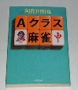

自分の麻雀をガラリと変えた言葉がいくつかある。柱石編No。１で紹介した「５分の辛抱」もその一つ。
それまでは、降りることは降りるにしても、「この手、もったいないなぁ」とか、「誰か、この危険牌を通してくれないかなぁ」
などと、いろいろな思いを持ちながら降りたりしていた。しかしその言葉を聞いて以来、降りることになんの抵抗もなくなった。
＃もちろん１ゲーム中に降りる回数の問題はなく、降りるときの気持ちの問題。今回の名言も、そんな自分の麻雀をガラリと変えた言葉。
これは阿佐田哲也の名著、「麻雀の推理（「Ａクラス麻雀」と改題）の教訓の１に出てくる言葉。

「誰だって負ける回はある。相手から一発も殴られないボクサーはいない」
「ああ、なんてオレはツイていないんだろう、とそこでクヨクヨするのは禁物である。不運なのではない。当然のことなのだ」
まさに目ウロコだった。言うまでもなく凡人なので、（大物手に放銃したくない、ダマテンに打ちたくない）などと云う気が強かった。
それに もともとイケイケモードが強いので、よく勝負に出る。そのくせ大物手に放銃したりすると（ああ、止めておけばよかった）な
んて意味不明の反省をしていた。
しかしこの名言を読んで以来、どんな手に放銃しても、なんとも思わなくなった。もっともそれ以来、イケイケモードがもっと激しく
なっている。（^-^；
|